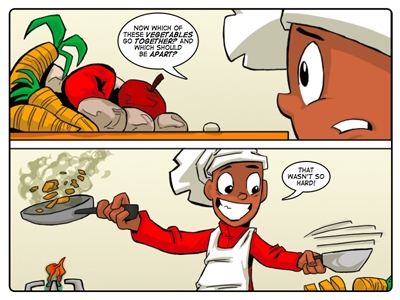
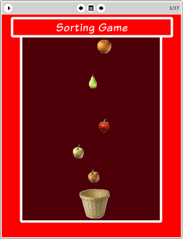

Story: Food for Thought
Theme: Thinking conceptually.
Synopsis
Tia prepares frantically for the arrival of one of the school's benefactors, the fussy Mr Schnoz. She is most worried about impressing Mr Schnoz at the lunch table because she knows how particular he is about food. The chef knows too. And he is so frightened of the challenge that he runs away. When the Thunderbolt Kids realise this, they don't have the heart to stress out Tia any further. Instead they decide to prepare lunch themselves.
Sophie, Farrah and Tom head for the library to try find out more about cooking. But Jojo stays in the kitchen, as he is convinced that there is a simpler, better way to confront this problem than researching French cooking methods in the library.
This story is about taking a seemingly complicated problem and simplifying it by thinking conceptually. The questions Jojo asks while cooking are questions that help him to think conceptually about the dishes he has to cook and the ingredients he must use to cook them. Using his own sense of taste to fill in the gaps in his knowledge allows him to prepare lunch on time and, apparently, very well.
Jojo's questions are equally useful in identifying and isolating concepts from a variety of other contexts as they are in the kitchen. You can use all of these questions to help your learners identify, isolate or explore concepts:
• How can I separate this problem (or challenge or idea) into parts?
• What is the most fundamental part?
• Which of these parts have something in common?
• Which of these parts are different?
• Which of these parts belong together?
• Which of these parts should be separate?
• What is left over?
Activity
This activity challenges learners to create a categories map. Given the skeleton of a categories map, the learners must read through the ideas that will form part of the map and then ask a series of questions that help them to sort the ideas into their appropriate places on the map.
The purpose of the activity is to get learners to practice asking idea organising questions and to practice categorising and recording their thoughts.
In doing this activity we want learners to recognise how ideas are interlinked. Using a simple, standard set of questions can help you to reveal these links.

The eToys project: Sorting
GameIn this project Jojo shows learners how to create a simple sorting game for toddlers. Learners must program three baskets to accept objects from the appropriate category, and reject objects from other categories. It’s a simple game but one that requires careful, analytical thinking.